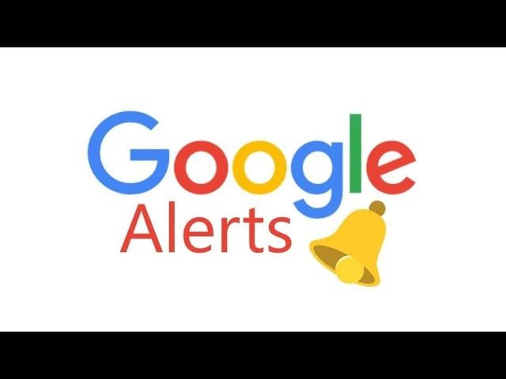
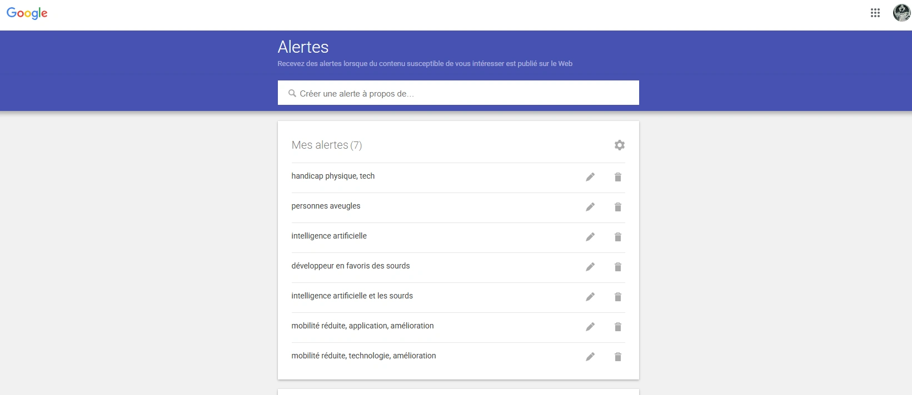
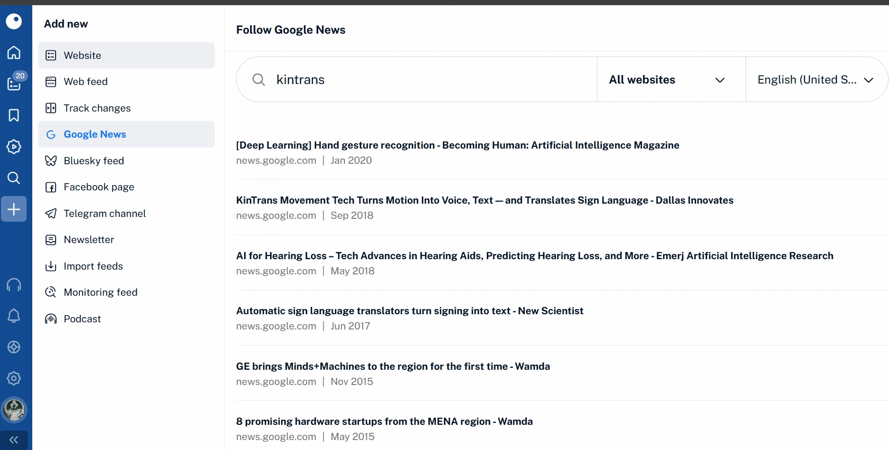
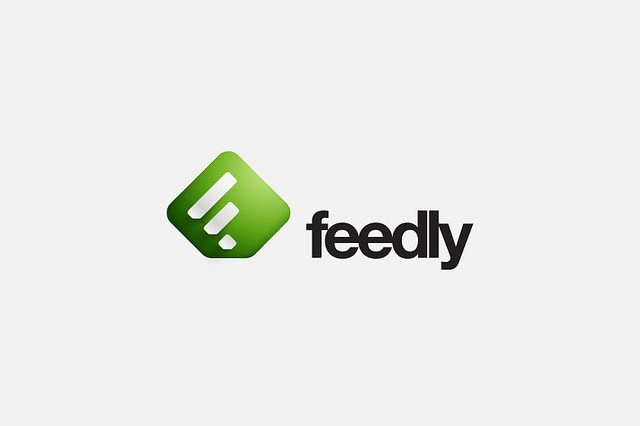
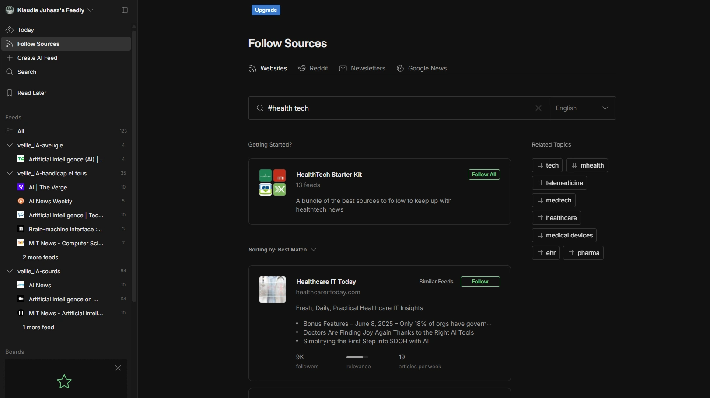
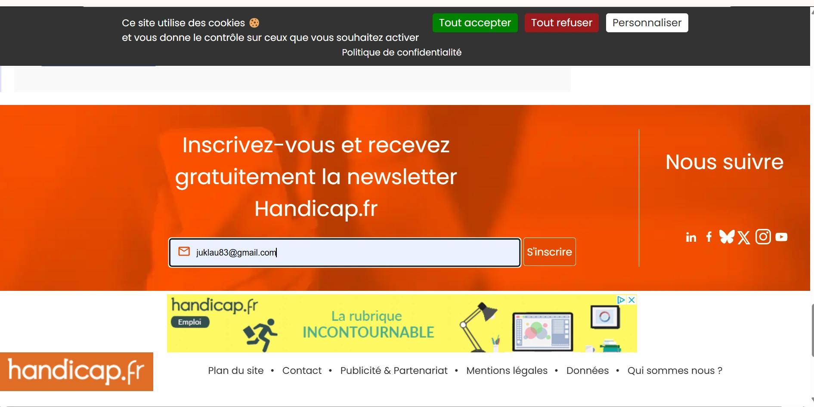
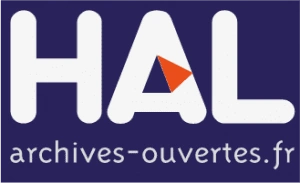
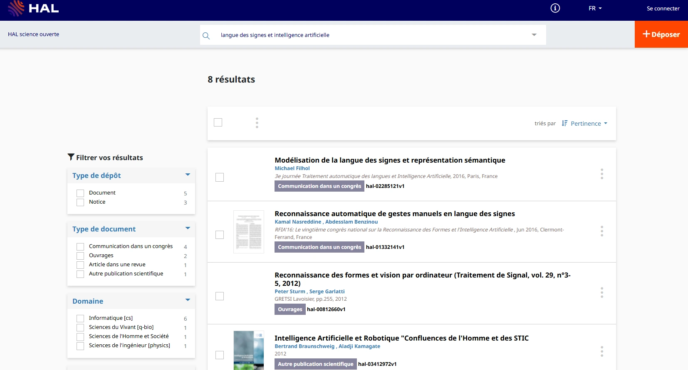

La veille technologique
Qu'est ce que la veille technologique ?
La veille technologique est une activité essentielle pour les informaticiens, leur permettant de suivre les évolutions constantes du secteur. En tant que composante de la veille stratégique, elle englobe la surveillance, la collecte et la diffusion d'informations liées aux innovations, aux recherches et aux brevets. Son objectif est d'anticiper les changements et d'en mesurer l'impact sur l'organisation, tout en assurant une gestion efficace du temps consacré à cette veille.
Quel est le thème de mes veilles ?
Trois axes de veille autour de l'innovation, de l'accessibilité et de la cybersécurité
Dans le cadre de mon portfolio, j'ai choisi de développer plusieurs veilles technologiques afin d'explorer des sujets actuels, utiles et en lien avec mes centres d'intérêt ainsi que mon parcours en informatique.
Mes recherches s'organisent autour de trois thématiques complémentaires :
- ◈ L'IA et les personnes sourdes ou malentendantes :
analyser comment l'intelligence artificielle peut améliorer l'accessibilité, la communication et l'inclusion au quotidien. - ◈ L'IA et les personnes aveugles ou malvoyantes :
étudier comment les technologies intelligentes peuvent renforcer l'autonomie, la mobilité et l'accès à l'information. - ◈ La cybersécurité et les cybermenaces :
comprendre l'évolution des menaces informatiques, les vulnérabilités exploitées et les bonnes pratiques de protection.
Ces trois sujets me permettent d'aborder la veille technologique sous des angles différents : l'innovation utile, l'accessibilité numérique et la sécurité des systèmes.
Les raisons de mon choix pour ces sujets de veille technologique
J'ai choisi de développer ces différentes veilles technologiques car elles reflètent à la fois mes centres d'intérêt personnels et les enjeux actuels du numérique.
Les thématiques liées à l'accessibilité me tiennent particulièrement à cœur. Depuis mon plus jeune âge, je m'intéresse à la culture des personnes sourdes et à la richesse des langues des signes, que j'ai eu l'opportunité d'approcher en hongrois comme en français. Cette découverte m'a permis de mieux comprendre la diversité des modes de communication et l'importance de concevoir des outils numériques plus inclusifs.
Le sujet de l'autonomie des personnes aveugles et malvoyantes m'intéresse également, car il montre à quel point la technologie peut devenir un véritable levier d'accessibilité au quotidien. Les solutions basées sur l'intelligence artificielle, la reconnaissance d'image ou l'assistance vocale ouvrent aujourd'hui de nouvelles perspectives.
En parallèle, la cybersécurité occupe une place de plus en plus importante dans le monde informatique. Les cybermenaces évoluent rapidement, touchent aussi bien les entreprises que les particuliers, et nécessitent une veille régulière pour comprendre les attaques récentes, les vulnérabilités exploitées et les mesures de protection adaptées.
À travers ces trois axes de veille, je souhaite donc montrer ma curiosité, ma capacité d'analyse et mon intérêt pour des sujets à la fois techniques, concrets et utiles dans le monde professionnel.
Ma méthodologie de veille
Pour mener à bien mes veilles technologiques, j'ai adopté une approche structurée et méthodique, combinant à la fois des méthodes de veille active (pull) et de veille passive (push). Cette complémentarité me permet de rester informée en continu tout en approfondissant certains sujets clés.
J'ai d'abord défini des objectifs de recherche précis afin d'orienter mes analyses, puis sélectionné des sources d'information fiables et pertinentes : sites spécialisés, rapports institutionnels, revues scientifiques, blogs d'experts, médias technologiques et plateformes dédiées à la cybersécurité ou à l'accessibilité numérique.
La méthode pull repose sur une recherche volontaire et ciblée de l'information. Elle comprend la consultation régulière de l'actualité en ligne, la lecture d'articles spécialisés, l'analyse de publications scientifiques, ainsi que l'exploration de ressources dédiées à l'innovation, à l'intelligence artificielle, à l'accessibilité et à la sécurité informatique.
La méthode push, quant à elle, permet de recevoir automatiquement les informations pertinentes. Elle s'appuie notamment sur la mise en place d'alertes Google, l'abonnement à des newsletters spécialisées et l'utilisation de flux RSS pour centraliser les publications provenant de différentes sources.
Afin d'optimiser la collecte et l'analyse des informations, j'organise ma veille selon plusieurs temporalités :
- ◈ Quotidiennement : consultation des alertes Google et des notifications d'applications
- ◈ Hebdomadairement : lecture des newsletters et sélection des contenus les plus pertinents
- ◈ Mensuellement : analyse approfondie des publications scientifiques, rapports et dossiers thématiques
Pour réaliser ces veilles technologiques, j'utilise plusieurs outils et ressources afin de collecter, trier, analyser et suivre l'évolution des informations dans le temps :
Google Alerts
pour recevoir des notifications sur les nouveautés liées à l'IA et au handicap


Inoreader
agrégateur de flux RSS pour suivre les sites spécialisés

Feedly
pour organiser mes sources d'information


Newsletters spécialisées
notamment Handicap.fr et Maddyness

HAL (Hyper Articles en Ligne)
pour accéder aux publications scientifiques


Interviews
pour obtenir des retours d'expérience concrets

Comment l'intelligence artificielle peut-elle améliorer l'accessibilité et la communication des personnes sourdes et malentendantes au quotidien ?
Cette veille technologique vise à explorer les avancées de l'intelligence artificielle dans le domaine de l'accessibilité pour les personnes sourdes et malentendantes. Elle met en lumière des innovations comme la reconnaissance automatique de la langue des signes, les outils de transcription instantanée et les assistants intelligents, qui facilitent la communication et l'inclusion sociale. L'objectif est d'identifier les nouvelles solutions technologiques et leur impact sur le quotidien des personnes concernées.
Comment l'intelligence artificielle peut-elle améliorer l'autonomie et l'accessibilité des personnes aveugles et malvoyantes ?
Cette veille technologique vise à analyser les innovations en intelligence artificielle qui permettent d'améliorer le quotidien des personnes aveugles et malvoyantes. Elle explore les avancées comme la reconnaissance d'images, les systèmes de description vocale, les assistants intelligents et les technologies de navigation assistée. L'objectif est de comprendre comment ces outils contribuent à une meilleure autonomie, une accessibilité accrue et une intégration plus fluide des personnes concernées dans leur environnement.
Comment comprendre les cybermenaces actuelles et leurs impacts sur les systèmes, les entreprises et les utilisateurs ?
Cette veille technologique porte sur l'évolution des cybermenaces récentes et sur les principaux risques auxquels sont confrontés les systèmes informatiques, les entreprises et les utilisateurs. Elle analyse notamment les vulnérabilités exploitées, les attaques marquantes, les mécanismes d'intrusion ainsi que les bonnes pratiques de protection.
L'objectif est de mieux comprendre comment les menaces se propagent, quels sont leurs impacts concrets et pourquoi la mise à jour, la surveillance et la gestion des accès restent essentielles dans toute stratégie de cybersécurité.